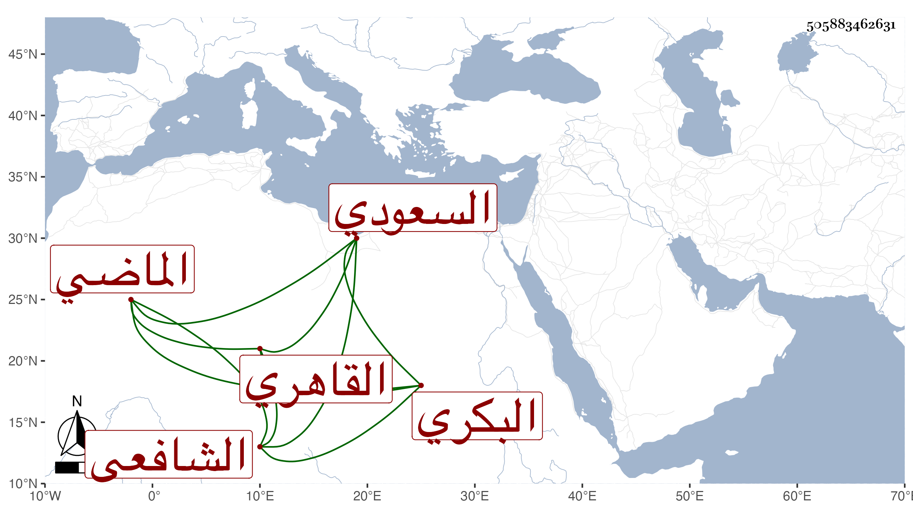

0902Sakhawi.DawLamic.ITO20230111-ara1.EIS1600.505883462631
Biography ID: 505883462631
13
محمد بن محمد بن أحمد بن أحمد بن محمد بن محمد المحب بن الشمس البكري القاهري الشافعي السعودي الماضي أبوه ويعرف بابن العطار . اشتغل وبرع في الميقات والفرائض والحساب وأخذ عنه غير واحد ، وتكسب كأبيه بالشهادة عند حوض ابن هنس ثم كتب بأخرة في ديوان المواريث الحشرية ولم يحصل على طائل . مات قريب الثمانين فيما أظن عن بضع وخمسين رحمه الله وإيانا .
